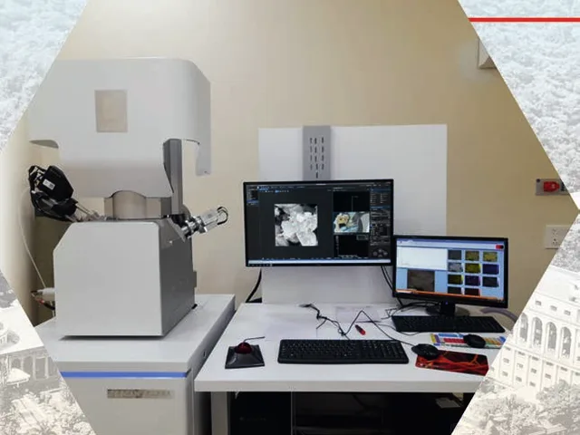
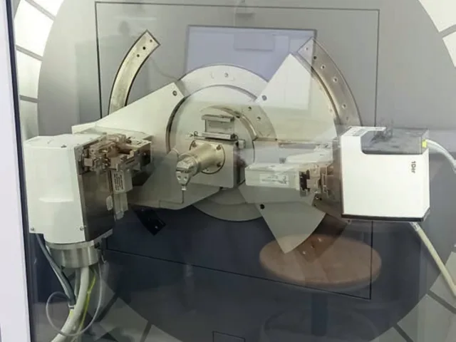
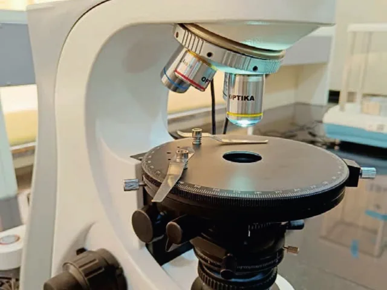
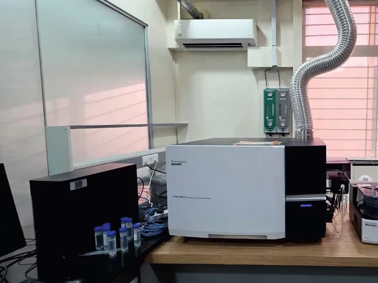
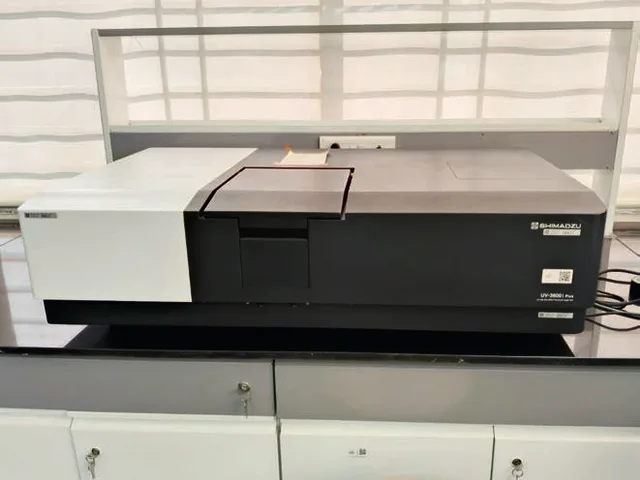
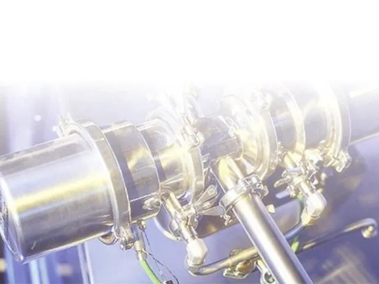
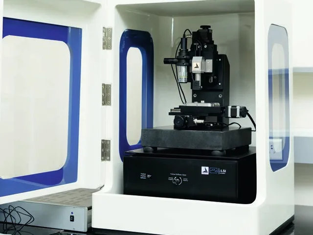
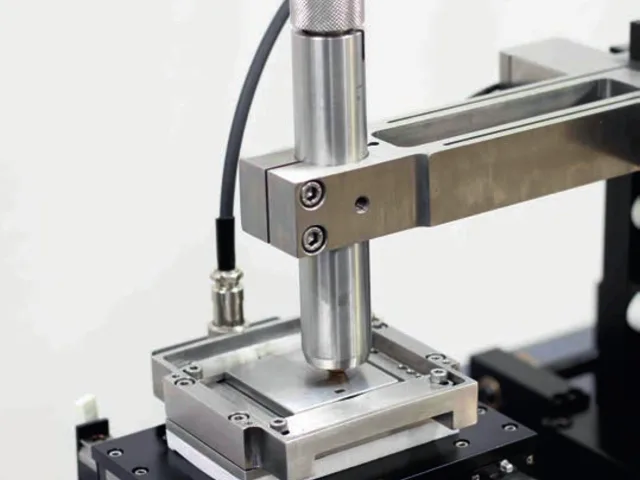

Shared research infrastructure
Central Research Facility
A state-of-the-art facility bringing high-end analytical, characterisation, fabrication, and testing instrumentation for materials, nanotechnology, spectroscopy, thin films, and energy-storage research under one roof.
12 research systems
5 capability areas
Download facility brochure (PDF)
MIT-WPU research strength
- ₹140M+Research grants received
- 6000+Research publications
- 170+Patents granted
- 250+Patents published
Explore the facility
Research capabilities
Inside the facility
Instruments & equipment

Scanning electron microscopy (FESEM–EDS) 
X-ray diffraction (XRD) 
Polarizing optical microscopy 
Trace elemental analysis (ICP–MS) 
UV–Vis–NIR spectroscopy 
Thin-film deposition (sputtering) 
Nanoindentation 
Surface profilometry
Access
Instrument enquiries
Contact the facility team about capability, sample requirements, and access.